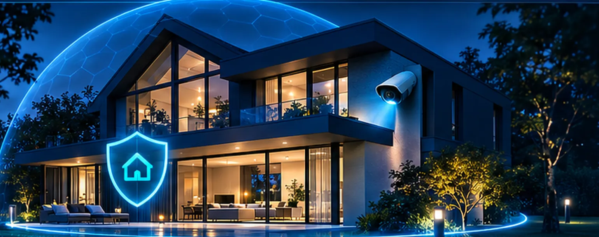

Bezpieczeństwo
Szyfrowane połączenie, kontrola dostępu i ochrona Twoich danych.
Podgląd na żywo, nagrywanie, powiadomienia, sterowanie i pełna kontrola – zawsze i wszędzie.

Szyfrowane połączenie, kontrola dostępu i ochrona Twoich danych.
Dostęp z telefonu, tabletu i komputera – gdziekolwiek jesteś.
Błyskawiczne ładowanie, płynny podgląd i natychmiastowe alerty.
Kamery, nagrania, harmonogramy i ustawienia w jednym miejscu.
Korzystaj z HOME SECURITY na swoim telefonie lub komputerze.
Wydanie rozwojowe: HOME SECURITY jest projektem rozwojowym i nie zastępuje certyfikowanego systemu alarmowego. Podgląd i zapis wymagają konta i uruchomionego komputera z kamerą. Sprawdź stan projektu, wymagania i przygotowanie.
HOME SECURITY
System Monitoringu DomowegoWysłaliśmy wiadomość z linkiem aktywacyjnym. Otwórz link w wiadomości albo przepisz kod, jeśli jest podany.
Potwierdź konto w Google. Dostęp do panelu nadal wymaga PIN-u.
HOME SECURITY
COMMAND CENTER · SECURE CHANNEL
Sprawdzam bezpieczne połączenie…
DOSTĘP DO PANELU · PIN WŁAŚCICIELA
Dostęp do kamery i nagrań tylko z PIN-em.
PIN ma 4 lub 6 cyfr. Po wpisaniu 4 cyfr zatwierdź strzałką.
PIN jest wymagany po każdym ponownym uruchomieniu aplikacji.
Wybierz tryb pracy kamery
Aktualny stan i ustawienia kamery
Jasność, jakość, źródło dźwięku i czas zapisu kamery.
Transmisja i zapis
Gotowe do sterowania